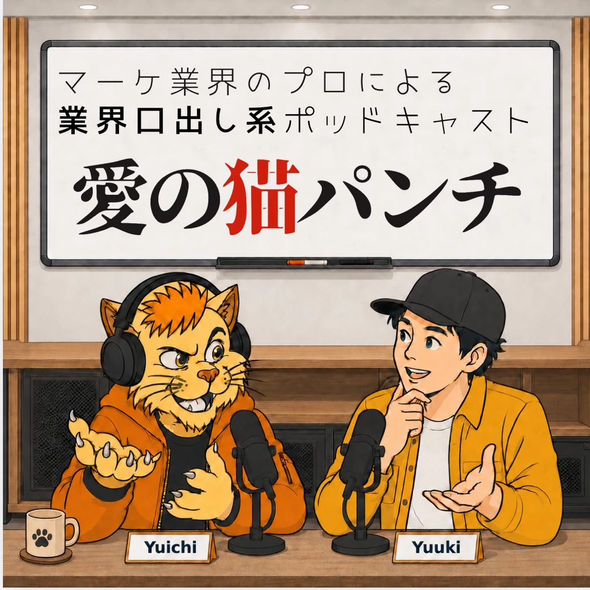

マーケティングのプロが、釣り・民泊・歯医者・ツアーガイドなど身近な商売の「もったいない」に猫パンチする番組です。批評で終わらせず、明日やれる一手まで爪を立てます。愛の猫パンチは、その商売にまだ牙があると信じているから。
出演者2人のうち1人が現役の企業マーケ担当。目指すのは、聴いた人の商売の「きっかけ」になること。
報道・IR・実際の売り場や広告など、誰でも見られるものだけを根拠にします。
自社・取引先・内部の話はしません。ゲストの話も、公開してよい範囲だけ。
猫パンチであってフルスイングではありません。同業者の、愛あるツッコミです。
難しいマーケの言葉は、生徒役のユウキがその場で聞き直します。専門知識がなくても、ゲストは自分の商売の話をするだけで大丈夫です。
現役の企業マーケ担当。番組では名前だけを出し、所属は非公開。課題に猫パンチし、「俺ならこうする」と代案を言い切る側。
聞き手。秋葉原でアニメ聖地ツアーのガイドをしていて、自分も集客に悩む側。難しい言葉をわかりやすく噛み砕いて聞き直す。
釣り・民泊・歯医者・ツアーガイド。身近な商売の「もったいない」が題材。ゲスト回では、あなたの商売がここに入ります。
「俺ならこうする」と、勝手に改善案を出します。番組いちばんの見せ場。
批評で終わらせません。収録の最後に「明日やること」を一緒に決めます。
準備するものはありません。「今、商売で困っていること」を持ってきてもらえれば、あとは番組側で進めます。
フォームかLINEで「集客がうまくいかない」程度の一言でOK。長文は要りません。
ユウキ・ユウイチ・あなたの連絡用グループを作ります。やりとりはここだけ。
候補枠に○△×を付けるだけ。全員○の枠で収録日が決まります。
Zoomで音声のみ。前後の雑談込みで1時間ほど。カメラは不要です。
編集と並行して、話した内容と「明日やること」をA4数枚にまとめてお渡しします。
業界名入りのタイトルで公開。数ヶ月後、やってみた結果を話しに来る続編も歓迎です。
台本なし。相談に来るつもりで、そのままの言葉で話してください。
「ここは出したくない」は収録中でも収録後でも遠慮なく。必ず切ります。
本名は不要。ラジオネームでも下の名前でも、希望どおりに紹介します。
「看護師の資格を活かして、どう差別化するか」の相談で来てくれました。結論は、直すべき中身が無いということ。
「やっぱ焦ってたんだなあ、みたいな。自分のいいところが見えなくなってたなあ、って思いました。」
ゆりさん（収録の終わりに）ゲストが持ち帰ったもの: 明日やること3つと、収録まとめ（A4・5枚）。さらに収録では時間切れで話せなかった追加提案が4つ。商品ページの矛盾を消す、写真を無料サービスのままにしない、上の価格帯を1本作る、事前のやりとりを工数として書く、の4点です。
集客やマーケに困っている人が、自分の商売を持ち込む回。フォームの「提案依頼」から応募。このページはそのためのものです。
猫パンチされた人が、数ヶ月後に「やってみた結果」を話しに来る回。ゆりさんのタイトル変更がその第1号になる予定。
各回の「俺ならこうする」をA4の提案書PDFにして概要欄に置く。決裁者が持ち帰れる形にする。
その業界の人が自分の業界名で検索して見つけられるように。まずは3ヶ月で6本公開が目標。
そう思ったら、相談したいことを1〜2行で。あとは番組側で進めます。